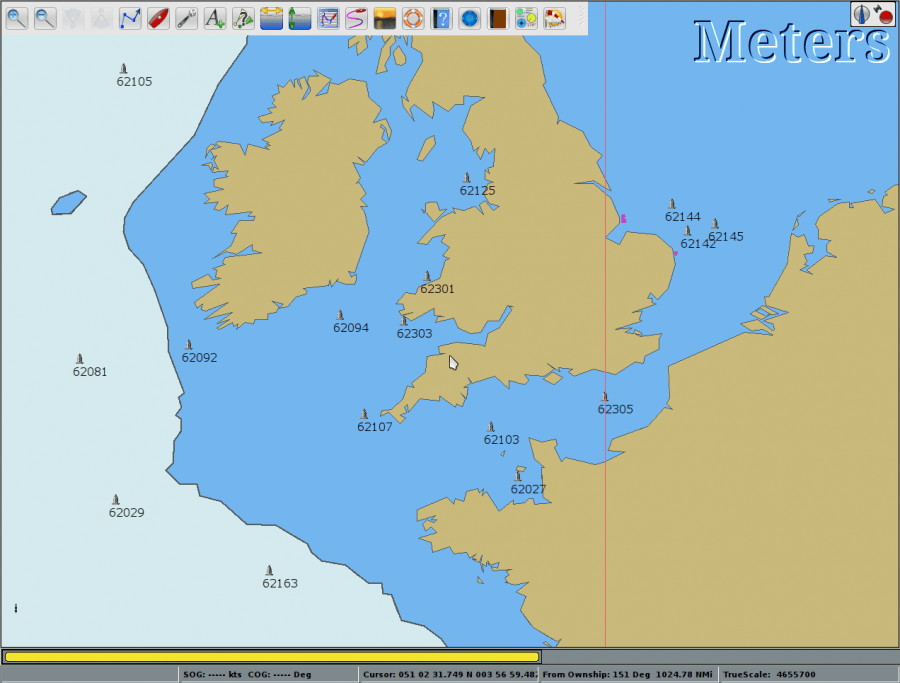
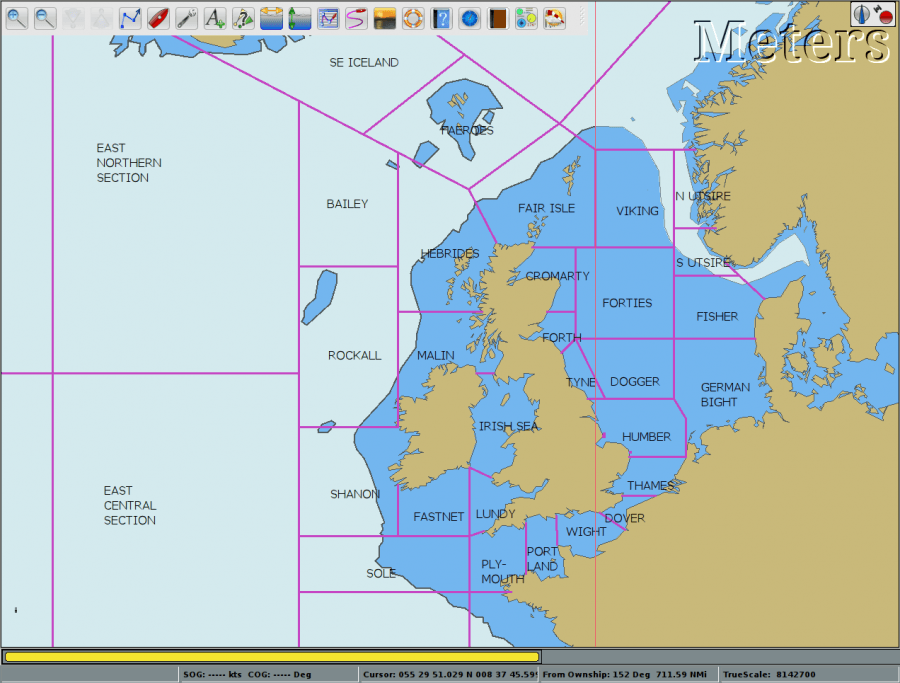

Noaa buoy position layer based on a script that parsed the NOAA data.

UK Met Office forecast areas made manually with tracks and waypoints. gpx file Uk_fcst-areas.7z

Some offshore wind farm areas. A kml file converted with gpsbabel.gpx file NEUoffshore_windfarms.7z
Much more on this site www.justmagic.com/GM-GE.html
Download layers library is available online https://opencpn.org/wiki/dokuwiki/doku.php?id=opencpn:opencpn_user_manual:advanced_features:layers_library
Note that far from all kmz/kml are suitable for conversion. gpx file WEEZ.7z